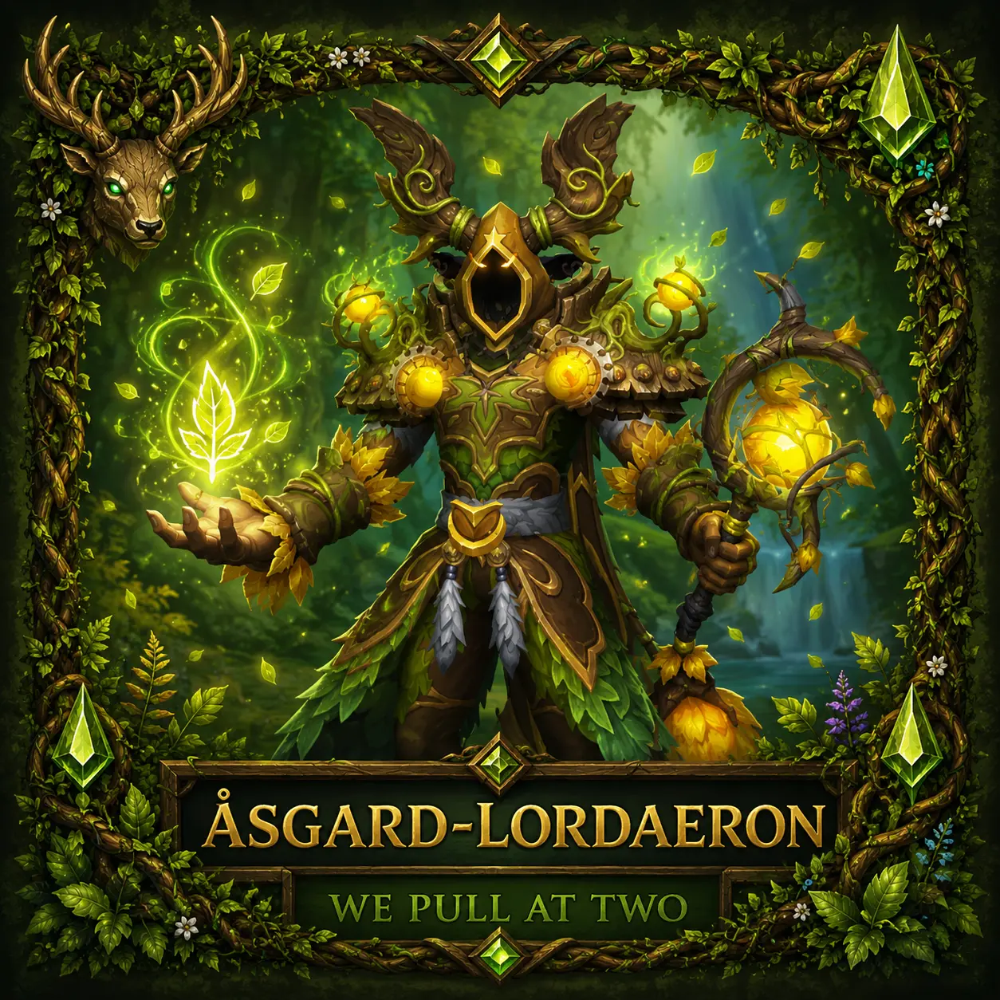
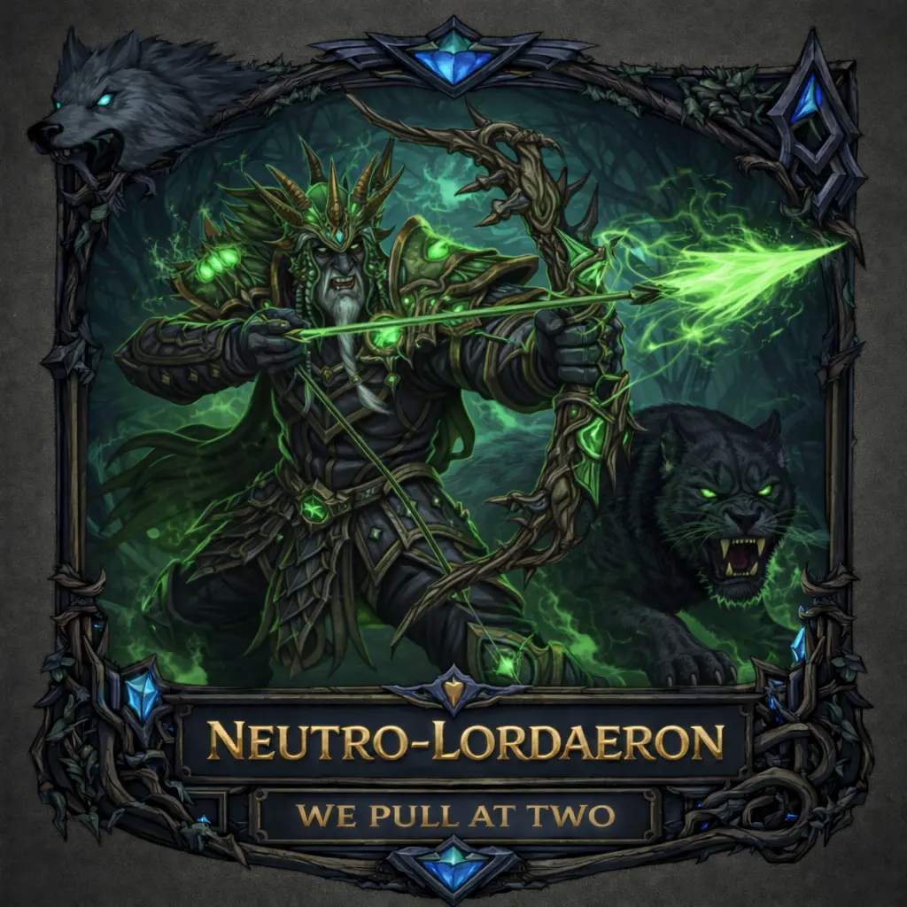
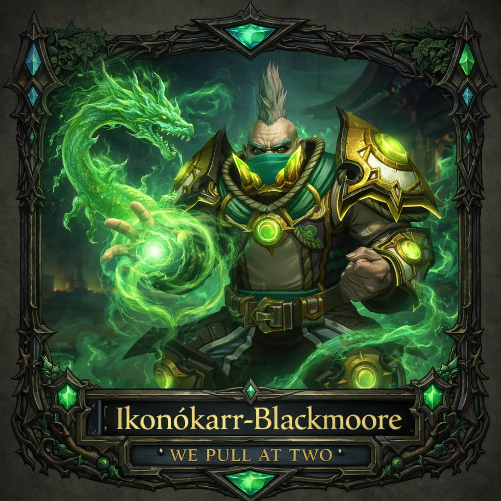
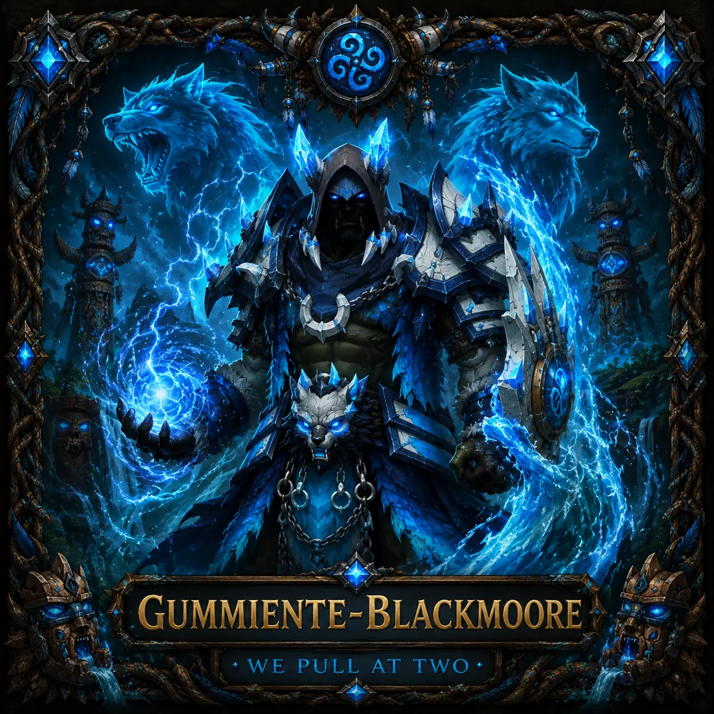

Über Uns
We Pull at Two ist eine erwachsene World of Warcraft Gilde mit dem Ziel, Heroic zuverlässig zu clearen und gemeinsam langfristig im Mythic-Content zu progressen.
Mythic verstehen wir als langfristiges Teamprojekt, das von Stabilität, Vorbereitung und kontinuierlicher Entwicklung lebt.
Wie weit wir in einer Season kommen, ergibt sich aus der Entwicklung des Raids – nicht aus unrealistischen Versprechen oder leeren Ansagen.
Unser gemeinsames Ziel ist es, uns langfristig bis Cutting Edge weiterzuentwickeln.
Unsere Kernwerte
Unsere Community
Unsere Community besteht nicht nur aus Raiden.
Auch Spieler mit Fokus auf Mythic+, Housing, Sammeln, Erfolge, Transmog, Mounts und soziales Gildenleben sind ein fester Bestandteil unserer Gilde.
Unabhängig vom Spielstil ist uns wichtig:
Respekt, Verlässlichkeit und die Bereitschaft,
Teil einer aktiven Gemeinschaft zu sein.
Unsere Haltung
Wir glauben an langfristigen Aufbau statt kurzfristigen Aktionismus.
Erfolg wird bei uns nicht eingefordert – er wird gemeinsam erarbeitet.
Gildenleitung
Unsere Gildenleitung versteht sich als ehrenamtliches Organisationsteam und Ansprechpartner für alle Belange rund um Gilde, Raid und Community.
Lerne die Menschen kennen, die hinter We Pull at Two stehen.
Gildenleitung anzeigen

Zuständigkeiten

Zuständigkeiten

Zuständigkeiten

Zuständigkeiten
Mitglieder
Raider sind Teil des Progress-Teams und beteiligen sich aktiv an Vorbereitung, Kommunikation und der kontinuierlichen Weiterentwicklung des Raids.
Dazu gehören beispielsweise ehemalige Raider, pausierte Spieler sowie Springer, die den Raid bei Bedarf unterstützen. Sie bleiben ein wichtiger Teil der Gilde und können jederzeit wieder aktiver werden.
Dazu gehören beispielsweise ehemalige Gilden- oder Raidmitglieder, deren Hauptcharakter inzwischen einer anderen Gilde angehört, die mit einem Twink weiterhin Teil unserer Community bleiben. Auch langjährige Freunde der Gilde, die gelegentlich an Mythic+, Erfolgsruns oder anderen gemeinsamen Aktivitäten teilnehmen, gehören zu diesem Rang.
Gemeinschaft
Unabhängig vom Rang gilt für alle Mitglieder derselbe Grundsatz:
Respektvoller Umgang, Hilfsbereitschaft und ein angenehmes Miteinander.